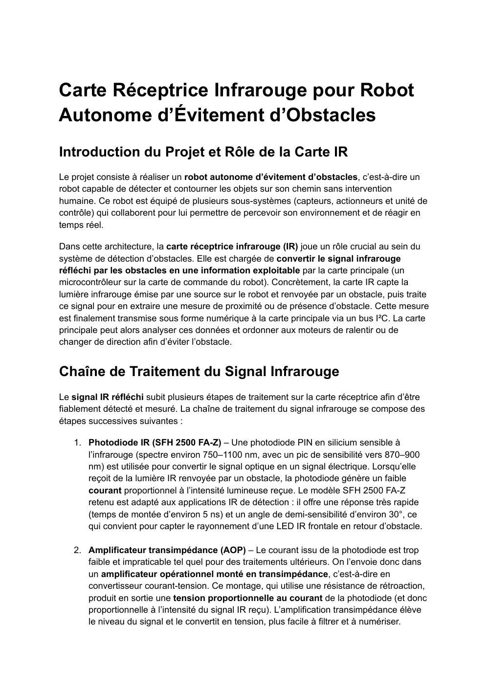

Index projets
Tous les projets
Vue d'ensemble des SAE, projets d'enseignement et stages. Chaque carte renvoie vers l'annee ou la page detaillee correspondante.
Troisieme annee
Systemes embarques, drone et IA

SAE BUT3
Kart Dashboard Pro V3
Dashboard Python / PyQt6 pour Raspberry Pi 4, services materiels et simulation.

Stage BUT3
Architecture drone ARODE
X500, Pixhawk, Jetson, SIYI, alimentation et tests progressifs.

IA / VLM
Detection et donnees synthetiques
Tests YOLO, DEIM/DEIMv2, RT-DETR et exploration de donnees synthetiques pour VLM.
Deuxieme annee
Robotique, FPGA et stage drone

SAE S3
Voiture autonome
Logique de decision, programmation, acquisition et validation du comportement.

Robotique
Robot eviteur d'obstacle
Analyse fonctionnelle, detection d'obstacle et fonctions informatiques.

FPGA
Regulateur de vitesse
Logique numerique, regulation, exploitation de signaux et validation.

Stage BUT2
Detection de victimes par drone
DJI Mobile SDK, video, GPS, ffmpeg, exiftool et tests de latence.
Premiere annee